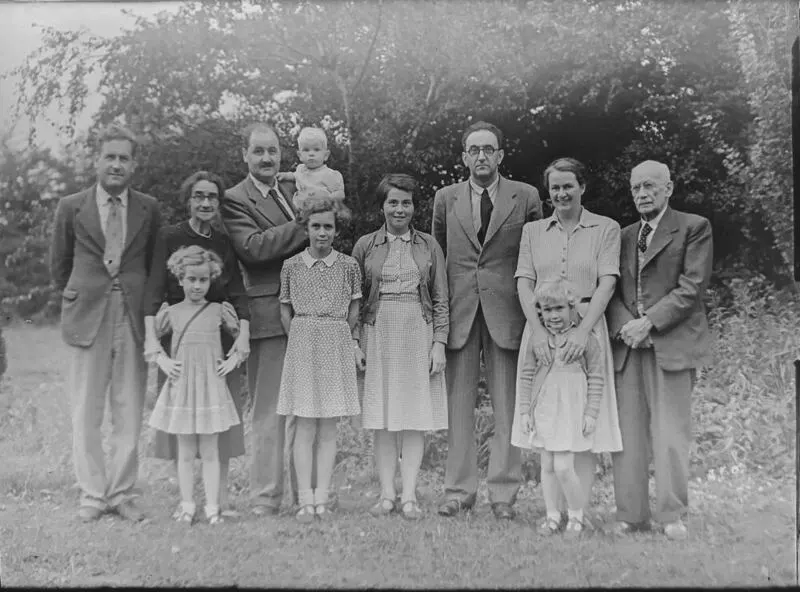
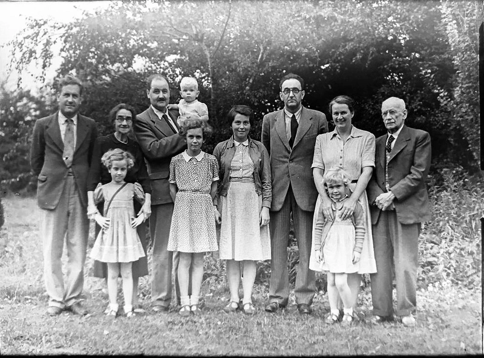

My name is Farhad Sabrian. Currently, I'm pursuing computer science at FU Berlin, though my academic journey began with a bachelor's degree in electrical engineering. My interests lie in literature, philosophy, and politics. I have a fondness for spending time in cafes, engaging in chess matches with friends or even strangers. When it comes to lake swims, especially in the summer, it's an invitation I simply can't decline.
Table of contents
4. What old pictures have to say? || 3. Make your voice heard! || 2. Boredom activity: gravity defying flowers || 1. Why am I here?
What old pictures have to say?
From sometimes ago, actually since I finished my bachelor, I actively have been looking for subjects that I can related to and involve creation. I'm sure at a point in my life I had a switch flicked in my head making me realize how much it is facinating when a piece of art, music or even an engineered piece of work is created. Throughout my bachelor study I figured, the purpose of engineering is not only utilizing mathematics/physics and different materials for a solution to be created. The morality of the proposed solutions also plays a major role for them to be considered. An extreme case that shows the importance of the ethics in engineering is the situation of jewish people before and during the rise of nazi party. As nazi propaganda was being implemented, they tired to take the narrative in their hands to distort the history and culture of jewish people to fool the mass to support their ethnic cleansing plans. During their rule, professional photographers were using cutting-edge equipments to make pictures with the purpose of dehumanizing jewish people. There were a number of companies that made a name from other people's misery just pushing for more profit. Imagine a collective resistance from the engineering communities with the aim to at least delay the development in the camera industry or any other industries. This resistance could have scathed the body of the propaganda machinery leading to more people being saved from the engineering-backed attrocities. It was in this period when some courageous photographers such as Henryk Ross made a wager on their life with their thirst to reveal the truth by secretly taking pictures of the jewish people and documenting the harsh realities and everyday life of them. Since these pictures were taken covertly, their quality and light contrast were not assessed before taking them.
Image contrast enhancement is a field of study in image processing with the purpose of enhancing quality. The objective is to make the important information, that already exist in the image, more prominent. Usually this transformation makes the picture look more appealing as the quality and the contrast of the image are improved. There is a lengthy list of methods to enhance the quality/contrast of images, and day by day new methods are added to the list. I have implemented some methods and put them on my Github page. A list of methods I have implemented is:
- Two-dimensional histogram equalization and contrast enhancement
- Histogram-Based Locality-Preserving Contrast Enhancement
- Fast Image/Video Contrast Enhancement Based on Weighted Thresholded Histogram Equalization
Original picture
Enhanced picture
The original picture shown above is taken from the internet and is not necessary related to the example given in the text. Original photo by Annie Spratt
Make your voice heard!
It has been a while that I am spending my time on computers and although it had it's ups and downs, over all, I am satisfied with the relation I have nurtured between my fingers and the computer screen. It has been a tremendously liberating experience working with computers and telling them what to do. To be honest there have been many cases that I found myself talking to my laptop elaborating what I want it to do to only find my fingers later typing and translating what I said into the computer language. Of course there are times that what is inside cannot be translated, so eventhough the laptop cannot react, still the laptop with its fan off just sits there calmly and listens. It was one of these times that a spark in my mind inflamed. From the chronical context of that period, I should say for me and many others, it was a time of anguish and rage. Around that time Mahsa Amini was killed and many were protesting all around the corner in Berlin. The sorrow of the murder was like a quiver stuck in my heart for the longest time. After a little bit of meditation over the eagle view of the problem, I realized being quiet is not an option. So I started letting my fingers go.
Throughout the time I was participating in protests, I figured, there is no platform out there that facilitates access to the registered protests on Berlin.de. This was the aim of my code development. After a long time of development, I was able to successfully deploy a telegram bot that is at command on the finger's hit and has a lot of potential in utilizing the information provided on Berlin.de. To let the code talk for itself, I will not dive more into it and will just provide a link and a picture of the telegram bot, @ProtestsBerlinBot.

Boredom activity: gravity defying flowers
Yesterday, I was routinely cleaning my room. At some point, I realized that the flowers in a jar on my table, with their heads drooping downwards, were completely dried. Since the drying has made the flowers light in weight, I figured, for each one I can use a small magnet to sustain its weight in any direction.
The flower heads appear to droop upwards in the set up scene. They are pointing up in defiance with the gravity pulling them down. Some of the flowers support the weight of others. The second picture, captured from below, gives the impression of the flowers standing upright. They touch the surface at a slim contact point. The narrow touchpoint and the delicate bulky flower heads rooting against gravity convey a combined contrasted expression of fragility, unreliability, commitment, and eagerness.
Why am I here?
Recently, I've observed that minimalist static webpages not only possess superior aesthetics but are also markedly more efficient than their JavaScript-heavy counterparts. Following this realization, I've been eager to establish my own digital space, allowing me to express myself in a new way. To be specific, I intend to share insights that captivate my curiosity, ideas that resonate during reflections in the stillness of the night, and my to-do lists.